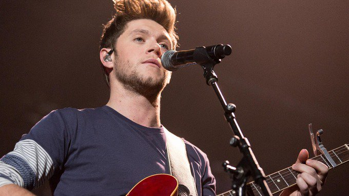

1D's Niall Horan excites fans with new single announcement
http://www.itv.com/news/2017-05-01/1ds-niall-horan-excites-fans-with-new-single-announcement/ … @NiallOfficialpic.twitter.com/9Hj4bSgIb5
Keyboard shortcuts are available for common actions and site navigation.
Please enable cookies in your browser preferences before signing in.


1D's Niall Horan excites fans with new single announcement
http://www.itv.com/news/2017-05-01/1ds-niall-horan-excites-fans-with-new-single-announcement/ … @NiallOfficialpic.twitter.com/9Hj4bSgIb5
Thank you for making #MarioKart 8 Deluxe the fastest selling Mario Kart game in the franchise’s 25 year history!pic.twitter.com/HkjWqL8f5Q
I know you’ve been waiting and I’m delighted to announce my new single ‘Slow Hands’ will be out 4th May ! can’t wait for you all to hear itpic.twitter.com/TPVUv150OF
EXCLUSIVE: @MikeRomeWWE is outside Sacramento's @Golden1Center and has gotten word about a huge tag team match taking place TONIGHT on #Raw!pic.twitter.com/UANssk6Sed
On Earth, areas near the equator are frequently cloudy, seen here by our @NASAEarth satellite over the Pacific Ocean http://go.nasa.gov/2pBnAYz pic.twitter.com/i3k8b3woJE
Yesterday's video on FaZeClan features @FaZeBloo's newest Montage, "CHAOS 2"! Don't miss it:
http://youtube.com/watch?v=U3T8pqiwyNo&list=UUNdpD9V0PIrH1glUJ6RG4-w …pic.twitter.com/JxuWSbP4H5
Ja Rule is still getting fried over the Fyre Festival -- and now, he and the festival co-founder are being sued http://cnn.it/2p2kp8U pic.twitter.com/fatZyb4VFv
RUMOR: GameFly listing suggests Modern Warfare Remastered will become available separately in July http://getintel.co/2p25vQ5 pic.twitter.com/vrplogdnd9
That feeling when you win your first-ever major  Congratulations,
Congratulations, @MijnVitesse pic.twitter.com/MuKn5k983h
Shoutout to @JohnIsner for helping make Match for Africa a success last night in Seattle  pic.twitter.com/m5CnUfb7cT
pic.twitter.com/m5CnUfb7cT
Given a choice, cats will pick human companionship over toys, food and appealing smells http://nyti.ms/2pATzb4 pic.twitter.com/xU8DV4pe8B
I didn't quit. I didn't retire. I stayed the course. I stayed focused. I still believed. Ignore the doubt. Don't let the world define you!pic.twitter.com/pnRx22T6Ns
Happy birthday Travis! @trvisXXpic.twitter.com/eVimxAUHoH
Been talking some new photoshoot ideas with @GraysonDolan @EthanDolan  (Any suggestions?)
(Any suggestions?)  Took this photo of Gray at their Warehouse pic.twitter.com/WJNtqdd7p9
Took this photo of Gray at their Warehouse pic.twitter.com/WJNtqdd7p9
Niall Horan's next single "Slow Hands" has a release date http://blbrd.cm/r1HXQu pic.twitter.com/EirUEOCKJl
we will be playing the @BBMAs on May 21 at 8e/5p on ABC. don't miss or we will never forgive you. 

#BBMAspic.twitter.com/wM9ar6Y3kY
WATCH: Trump abruptly ends interview after being pressed on Obama wiretapping claims http://hill.cm/dgka4ol pic.twitter.com/w9sWqwrmQJ
Floyd Mayweather Sr. didn't hold back: "I'll beat the s--t out of McGregor! Anytime he wants it, let's go" http://ble.ac/2oQKYSy pic.twitter.com/VxlUbKDo2B
Chris Pratt thinks him and Chris Evans would be a “really happy" married couple http://bzfd.it/2pPWuO9 pic.twitter.com/0lfu1yhowW
The American people don't know what's best for them... I do. May 30.pic.twitter.com/EhGUKb8eOb
Everyone. May I introduce you to the Snow Leopard..pic.twitter.com/OcAC8Nj2m0
Nineteen years ago today, "He Got Game" debuted, and the world met Jake and Jesus Shuttlesworth. [Credit: Getty Images]pic.twitter.com/xPg7Oqp1ky
Nasdaq CEO Adena Friedman says investors should be required to disclose short positions https://www.bloomberg.com/news/videos/2017-05-01/nasdaq-ceo-more-short-selling-disclosure-is-needed-video …pic.twitter.com/wPSmgKAAG5
'Here's What Disney•Pixar Logos Look Like Around the World': http://di.sn/601185cQJ pic.twitter.com/wBvD2c3uAH
Today in 1991: Nolan Ryan and Rickey Henderson both set new @MLB records. http://atmlb.com/2qm8y9H pic.twitter.com/1V2ScqlPkO
Launch and landing of the NRO spy satellite was good. Tough call, as high altitude wind shear was at 98.6% of the theoretical load limit.pic.twitter.com/nBzBMNdjBp
Henry Cooper after he almost best Mohammed Ali, 1963.pic.twitter.com/ecmld17l3J
This stray cat followed me home last night. so I gave her a bath and killed the flees. She's a cutie. A real cutie.pic.twitter.com/GaRSic0zEG
GOP is two votes away from another health care failure, as VP Pence tries to drum up support for the latest bill. http://cnn.it/2qxhupb pic.twitter.com/WcBZFfODc5
This @POTUS is the best friend that America's small biz will ever have. He knows small biz are the engines of our economy #SmallBusinessWeekpic.twitter.com/ebje5BEM5I
Before we start counting down the Top 100 Players of 2017…
Let’s recap the Top 100 players of 2016! #NFLTop100pic.twitter.com/FgU2NrU3kn
Here we have an exotic dog. Good at ukulele. Fashionable af. Has two more arms if needed. Is blue. Knows what 'ohana means. 13/10 would petpic.twitter.com/gEsymGTXCT
"Pre-existing conditions are in the bill," @realDonaldTrump said of GOP's new health care bill. That's Mostly False. http://bit.ly/2pp3CQ2 pic.twitter.com/3Z2daWThzB
Meet the puppies who will play Rollo in season 4 of @Outlander_STARZ! http://share.ew.com/Bk2duaF #Outlanderpic.twitter.com/knJ3jRz8W1
The final point of Paul Pierce's career.pic.twitter.com/VdZv8LPP4Y
The battle for Game Three supremacy starts at 7:30PM ET.pic.twitter.com/jTE7uCEDt5
Current standings of the Greatest NHL Teams:
1. '83 @NYIslanders
2. '91 @penguins
3. '92 @penguins
Vote now: http://greatestnhlteams.com #NHL100pic.twitter.com/BxLGKL8AwA
Until next year, Tripod.
Take care, buddy.
@Zurich_Classicpic.twitter.com/U3cPUHpE8z
On this day in 1967, The Jimi Hendrix Experience's first US Single ("Hey Joe" b/w "51st Anniversary") was released #JimiHendrix #HendrixAt50pic.twitter.com/1DwRYntvR9
In @tnyshouts: I am a Tinder guy holding a fish and I will provide for you. http://nyer.cm/PZjWPnp pic.twitter.com/UWRRnRukra
Did 18 this morning, this was one of my better swings on the round.pic.twitter.com/EhPvg1zENS
When you tweet with a location, Twitter stores that location. You can switch location on/off before each Tweet and always have the option to delete your location history. Learn more